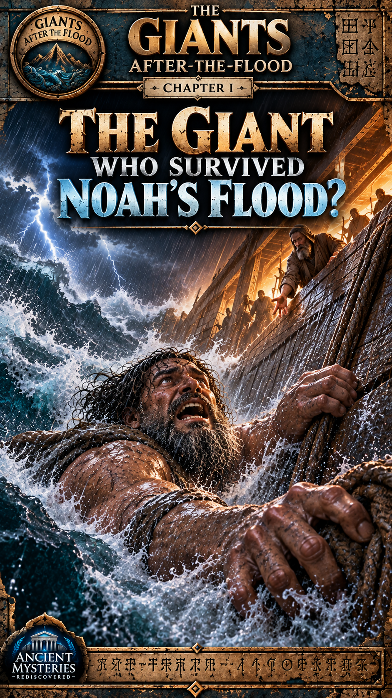
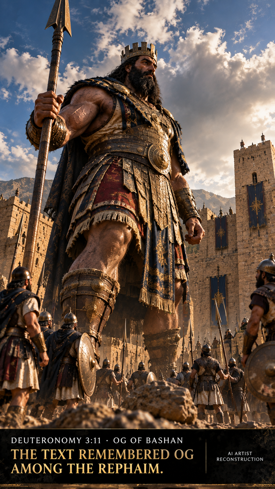
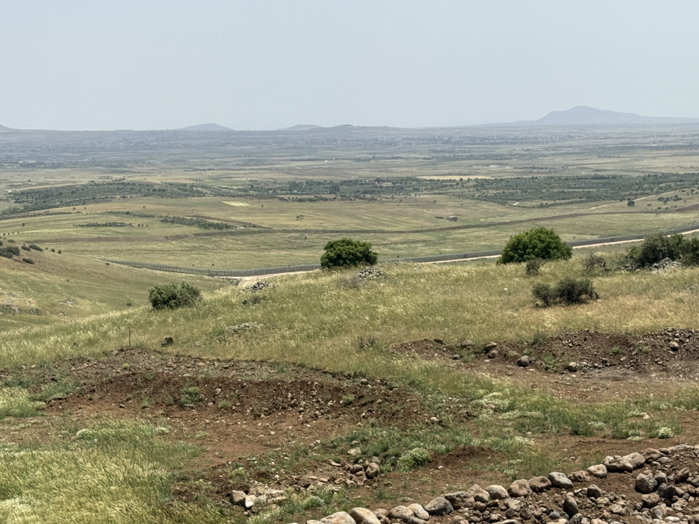
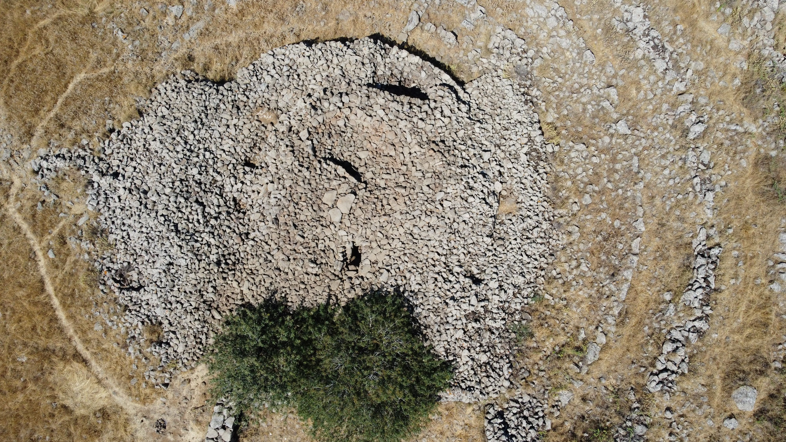
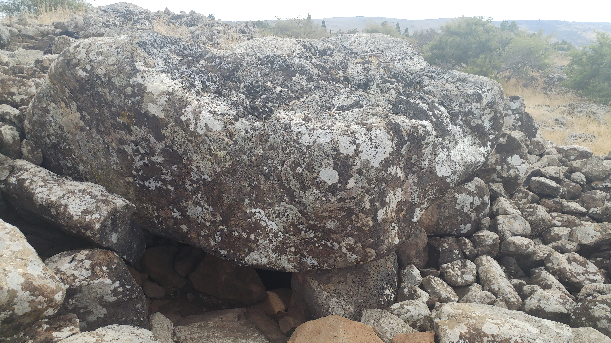
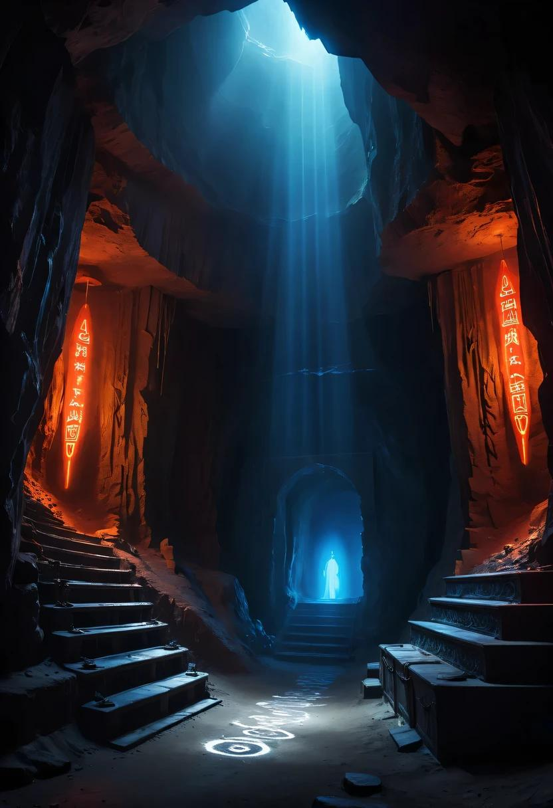

Genesis
Genesis 7 names Noah and those with him in the ark as the survivors. It does not narrate Og surviving the Flood.
Read Genesis 7 ↗Giants After the Flood · Investigation 001
A giant's legend draws us in. Ancient texts complicate the story. Real archaeology deepens the mystery.

Prologue
The apparent contradiction at the center of the investigation: Genesis describes the destruction of life outside the ark; a much later Jewish tradition names Og as an exception.
Prologue narrative intentionally withheld. No substitute prose has been invented.
Genesis 7 names Noah and those with him in the ark as the survivors. It does not narrate Og surviving the Flood.
Read Genesis 7 ↗A later interpretive work adds an Og survival tradition. It is not part of the Genesis account.

Chapter I
Chapter I narrative intentionally withheld.
Limit: the chapter does not connect Og to Noah's ark.
Chapter II
The survival account belongs to a later layer of tradition, not to Genesis.
Chapter II narrative intentionally withheld.
No Og survival episode.
An explicit Og survival episode.
Chapter III
Chapter III narrative intentionally withheld.
Pirkei de-Rabbi Eliezer 23 preserves a later account in which Og survives alongside the ark. The page must present this as later literature, not as Genesis and not as archaeological evidence.
Read the source at Sefaria ↗Chapter IV

Chapter IV narrative intentionally withheld.
Deuteronomy 3 describes numerous settlements in Og's realm and characterizes fortified towns with walls, gates, and bars. It also calls part of Bashan “the land of Rephaim.”
Verify the passage ↗Limit: a modern landscape photograph does not identify a particular biblical settlement.
Chapter V · Authentic archaeology
These places are real. The proposed connection to Og or the Rephaim is not established by archaeology.
Chapter V narrative intentionally withheld. Verified research notes and image credits remain available below.

Published research describes a central tumulus and multiple concentric basalt walls. Its chronology, development, and function remain subjects of study; astronomical and other interpretations must not be presented as settled.
2026 PLOS ONE reassessment ↗2024 remote-sensing discussion ↗
Research documents a monumental multi-burial dolmen within a field of more than 400 structures. The published study reports a massive capstone, a central chamber, human remains, and engraved rock art.
2017 PLOS ONE study ↗Evidence boundary: neither monument is verified as the work of Og, giants, or the Rephaim. The Shamir dolmen is not beneath Rujm el-Hiri.

Chapter VI
Chapter VI narrative intentionally withheld.
These passages place rephaim language in the realm of the dead or shades, a different textual setting from Deuteronomy's living people.
Isaiah ↗ Job ↗Comparisons with Ugaritic texts are scholarly interpretations. The identity and status of the rp'um, and their relationship to biblical traditions, remain debated.
Open-access study ↗1 Enoch develops a separate tradition concerning the spirits of the giants. It should not be collapsed into the biblical Og account.
Public-domain translation ↗Chapter VII
Chapter VII synthesis intentionally withheld.
Deuteronomy remembers Og as king of Bashan and associates him with the Rephaim.
Pirkei de-Rabbi Eliezer narrates Og's survival alongside the ark.
Rujm el-Hiri and the Shamir dolmens are genuine ancient stone monuments studied by archaeologists.
No verified archaeological evidence shows that Og survived the Flood or that giants built either monument.
We don't retell their entire lives. We show why their stories survived.
Door Beyond · Investigation 002
What if the stone circle wasn't built to keep something out—but to let something return?
Speculative question This is a dramatic interpretive prompt, not an archaeological conclusion. Investigation 002 is not linked because it is not yet published.
Background: unmodified Rujm el-Hiri photograph by Bukvoed, CC BY 4.0. Blue light and gradients are separate CSS layers; the source file is unchanged.
Sources, credits & boundaries
This local implementation is not content-complete. The approved manuscript is missing, so all seven chapter narratives remain explicit placeholders. The dedicated Door Beyond artwork and exact published teaser file The Ancient Stones of Bashan(2).png were not found. Neither was silently substituted.